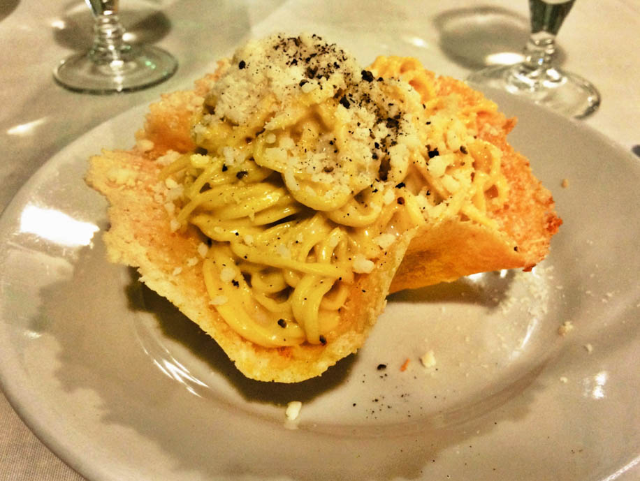

The weather in Rome more unpredictable than Berkeley's (which is pretty hard to beat) and today it poured most of the day. On my walk home from school I decided to wander around my neighborhood of Trastevere because exploring in the rain is one of my favorite things to do. I got a bit lost but ended up finding stairs that led me to the top of the hill in Trastevere where I had a view of the whole city! I also tried a new restaurant, Roma Sparita, for dinner which is famous for i Tagliolini al Cacio e Pepe (a type of pasta with cheese and pepper). It is served in a parmesan cheese bowl and currently ranks in top three meals of my semester thus far! I'll definitely be taking my parents here when they come.

During the last week I've really started to feel at home here. Everyday after school is a new adventure whether I accompany friends on a trek to a a viewpoint of the city, visit one of the hundreds of churches in Rome, try a new bar for a caffè, or simply wander the streets. This past week I went to see one of my favorite sculptures that I learned about in a past art history class, Bernini's Ecstasy of Saint Teresa. I also hiked up to the Aventine Keyhole with friends where you can look through a small keyhole and see St. Peter's Basillica in perfect sight. I gatti di Roma, or the cats of Rome, are a kind of famed bunch and we stopped by the city's cat sanctuary which houses over 200 cats and takes care of another 2,500-3,000 or so throughout the year as well. Over the weekend, we visited the Roman Forum, Palentine Hill, and the Colloseum all of which are astounding. I've also found my second favorite pizza in Rome at Da Remo; it's yet to be decided whether Dar Poeta or Da Remo takes the crown. This is our last week of our intensive Italian class and though I'm excited to have reacquired my Italian, I'm also looking forward to taking other classes alongside Italian.
After a week and a half in Rome, I finally have time to start writing (aka mostly posting pictures and writing bullet points for now)! Below is an overview of my first 11 days in my home for the next four months.
Activities:
- • I arrived in Rome with all my luggage (contrary to my parents worry that my luggage would be stolen)!
- • We live in Trastevere and school is across the river so we get to look at the beautiful view of the Tiber everyday (see below)
- • We went on a Baroque walking tour with one of our professors (we learned about two piazzas)
- • Visits to the Pantheon (a six minute walk from my school), Spanish Steps (La Piazza Spagnola in Italian), Piazza Navona, Trevi Fountain (currently under rennovation), the Jewish Ghetto for i carciofi alla giudia (Jewish style artichokes), Vatican Museums, and St. Peter's Basillica
- • An Italian cooking class where we made fresh pasta, pesto, Carbonara, potatoes, cauliflower, and bruschetta
- • Lots of pizza lunches/dinners, gelato, and coffee (caffè)
Things I've Learned:
- • Coffee on the go is NOT a thing here although a few places advertise "American Coffe To-Go" so I've had to get used to downing a quick caffè (espresso shot) or caffè americano (much smaller version of my usual americano)
- • Farmer's Markets are extremely cheap here and have the best food
- • You will stumble upon ruins during nearly any given walk


{kind=link}
{kind=link}
{kind=link}
{kind=link}
{kind=link}
{kind=link}